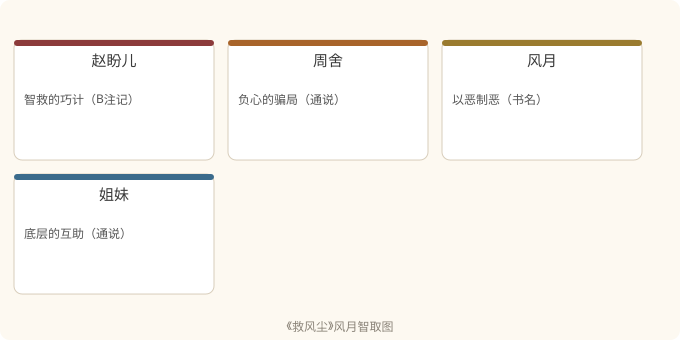

救风尘
一、基本信息
| 作者 | 关汉卿 |
|---|---|
| 成书/出版 | 作者页注记：Britannica 关汉卿条署名条目（作品归属通行说法——年代通说待核） Guan Hanqing — Encyclopaedia Britannica（百科全书） |
| 国别/地区 | 中国 |
| 时代 | 古代 · 13世纪 |
| 体裁 | 杂剧 |
| 语言 | 汉语 |

《救风尘》风月智取图（主题·结构图）
二、创作背景
作者页注记：救风尘——'喜剧代表作，写妓女赵盼儿智救同伴；署名条目见 Britannica 关汉卿条（作品归属通行说法）'。
Britannica：关汉卿——元杂剧四大家之首说（作者页语境——待核）。
题材（通说待核）：赵盼儿以风月手段搭救被周舍欺骗的姐妹宋引章。
三、内容脉络
（通说待核）赵盼儿的风月圈套：智取周舍。
（通说待核）'风月救风尘'：以恶治恶的喜剧智慧。
四、主要人物表
| 人物 | 身份 | 说明 |
|---|---|---|
| 赵盼儿 | 妓女/救人者 | （B注记：赵盼儿） |
| 宋引章 | 被骗姐妹 | （B注记） |
| 周舍 | 负心商人 | （通说待核） |
五、主题与艺术特点
- 底层女性的互助（通说待核）。
- '风月'作为武器（通说待核）。
- 元杂剧喜剧的典范（B注记语境）。
六、影响与评论
- Britannica：关汉卿条署名条目（作者页注记）。
Guan Hanqing — Encyclopaedia Britannica（百科全书） - Britannica：《窦娥冤》为代表作（作者页交叉）。
Guan Hanqing — Encyclopaedia Britannica（百科全书）
七、阅读建议
难点
- 元杂剧四折一楔子体制。
- 市井口语的元代语法。
- 《救风尘》（人民文学出版社《关汉卿全集》等——通说待核）。
- 元刊本（公有领域）。
关汉卿喜剧首选；与《窦娥冤》对读。
八、待核实
- 四折结构核对（通说）。
- 署名条目的'通行说法'边界核对（B注记）。
- 2023年影视改编不采。